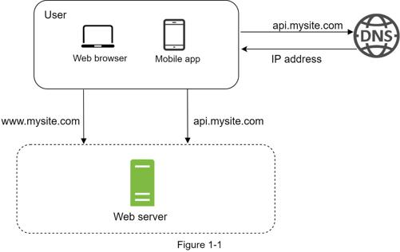
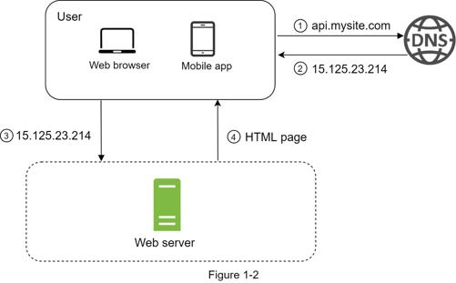
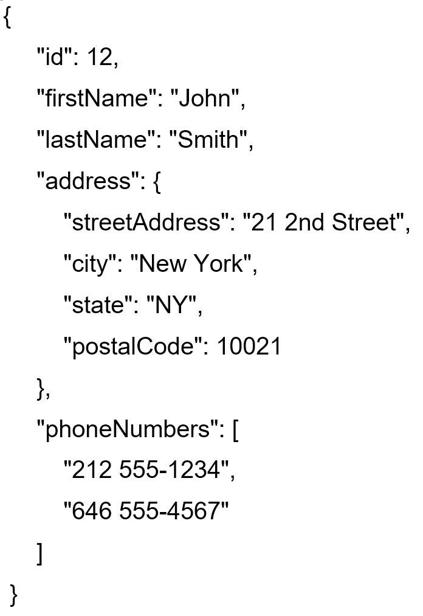

A journey of a thousand miles begins with a single step, and building a complex system is no different. To start with something simple, everything is running on a single server. Figure 1-1 shows the illustration of a single server setup where everything is running on one server: web app, database, cache, etc.

To understand this setup, it is helpful to investigate the request flow and traffic source. Let us first look at the request flow (Figure 1-2).

1. Users access websites through domain names, such as api.mysite.com. Usually, the Domain Name System (DNS) is a paid service provided by 3rd parties and not hosted by our servers.
2. Internet Protocol (IP) address is returned to the browser or mobile app. In the example, IP address 15.125.23.214 is returned.
3. Once the IP address is obtained, Hypertext Transfer Protocol (HTTP) [1] requests are sent directly to your web server.
4. The web server returns HTML pages or JSON response for rendering.
Next, let us examine the traffic source. The traffic to your web server comes from two sources: web application and mobile application.
•Web application: it uses a combination of server-side languages (Java, Python, etc.) to handle business logic, storage, etc., and client-side languages (HTML and JavaScript) for presentation.
•Mobile application: HTTP protocol is the communication protocol between the mobile app and the web server. JavaScript Object Notation (JSON) is commonly used API response format to transfer data due to its simplicity. An example of the API response in JSON format is shown below:
GET /users/12 – Retrieve user object for id = 12
